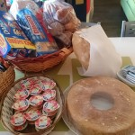
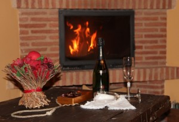

Desayuno
Incluido en el precio del Alojamiento, ofrecemos desayuno con café, leche, cola cao, zumo, infusiones, bollería tradicional…etc.
Detalle de Bienvenida

| Precio |
|---|
| 20 € |
Sorprende a tu pareja y convierte tu estancia en una celebración especial.
Botella de Cava, Bombones y Rosa.
Rutas 4×4
Se pueden contratar rutas por el parque natural de la Sierra Norte.
| Ruta medio día | Ruta día completo | Características | |
|---|---|---|---|
| Con coche propio | 50 € | 70 € | Hacemos de coche guía, tu pones el vehículo. Para poder contratar esta opción al menos 3 todoterrenos deben seguir al coche guía. Los precios son por cada todoterreno. |
| Sin coche propio | 140 € | 220 € | ¡Te llevamos en nuestro 4×4! El precio es por 4 personas. |
Descuento para grupos más numerosos.
{kind=link}
{kind=link}
{kind=link}
Vuelos en globo por Sigüenza
{kind=link}
| Vuelo en globo por Sigüenza |
|---|
| 140 € |
| Precio por pasajero |
Sigüenza, la ciudad del Doncel, está situada a tan sólo una hora de Madrid, ubicada al norte de Guadalajara. Puede contratar un viaje en globo, en los que podrá observar desde el aire la arquitectura medieval con la catedral y el Castillo de Sigüenza, que datan del Siglo XII.
El viento le guiará a través de valles repletos de aldeas y castillos medievales, bosques y dehesas.
La duración del vuelo en globo por Sigüenza rondará entre 1 hora y 1 hora y media, siempre dependiendo de las condiciones del viento.
Una vez realizao el aterrizaje, brindis con cava y pequeño almuerzo en el campo con entrega de certificados de vuelo en globo.
Piscina de Verano
{kind=link}
Piscina Municipal en Arbancón abierta al publico durante julio y agosto a 1 minutos de los apartamentos.
Dispone de 2 vasos para infantil y adultos.
Rutas a Caballo
Complementa tu estancia con rutas a caballo de una hora o dos horas
| Rutas a Caballo | |
|---|---|
| 20 € | 30 € |
| Una hora | Dos horas |
| Precio por Persona | |
{kind=link}
Detalle de bienvenida con Cerveza Artesana
| Degustación Cerveza Artesana |
|---|
| 10 € |
| Saborea la cerveza artesana ARRIACA, la cerveza de Guadalajara, acompañada de un aperitivo a tu llegada a nuestros alojamiento.
2 Cervezas, con aperitivo. |
{kind=link}
Vuelo en Parapente Biplaza
| Vuelo para una persona |
|---|
| 60 € |
| Acompañado de monitor |
Puede contratar un vuelo para una persona, acompañado por el instructor, en parapente biplaza. Por supuesto la seguridad es lo primero y por ello el instructor pone a su disposición material de última generación. El recorrido es desde la montaña de la Muela, cercana a Arbancón, y con un desnivel de 250 metros.
Bautismo de vuelo
{kind=link}
| Vuelo de Divulgación | ||
|---|---|---|
| 15 minutos: 50 € | 30 minutos: 90 € | 60 minutos 160 € |
Conviértete en piloto por un día y toma los mandos del avión junto a un profesional. Una experiencia única.
Masajes
{kind=link}
| Masaje para dos personas |
|---|
| 60 € |
| 1 hora (30 minutos / personas) |
Se puede contratar un masaje para dos personas. Se usan aceites esenciales y tiene una duración aproximadamente de 1 hora (30 minutos / persona). Se realiza por parejas (media hora cada uno) y se obsequia con una masaje facial.
Se realiza en la propia casa, ambientada con música relajante y velas. CARTA DE MASAJES
Visita Bodega Río Negro
La finca Río Negro está muy cerca de Arbancón. Para los amantes del vino o aquellos que quieran aprender más sobre el mundo de la enología es un complemento perfecto para una estancia en nuestros alojamientos
| Visita guiada a la bodega y los viñedos. | Visita guiada a la bodega y los viñedos con degustación de nuestros vinos. |
|---|---|
| 10 € | 19 € |
| Percio por persona | |
{kind=link}
Cena Romántica
{kind=link}
| Precio |
|---|
| 60 € / Pareja |
Que mejor manera que sorprender a tu pareja con una cena romántica sorpresa. A tu llegada y tras un tranquilo paseo por los alrededores, tu alojamiento estará convertido en una estancia romántica con una cena preparada para los 2 a la luz de las velas.
Consulta nuestro menú.
Como dice el refrán: Si un buen fin de semana quieres pasar los apartamentos Rurales Señora Clara has de visitar